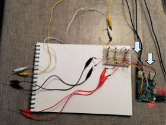

Setup
De gebruikte materialen:
- Raspberry pi 3
- Breadboard
- 5 male-female jumper wires
- 9 jumper wires
- 6 krokodillenklemmen
- 3 LDR's
- 3 condensators 10uF 50V
 Met het GPIO-board van de Raspberry Pi en een breadboard is dit circuit gebouwd.Vanuit pin #1 komt de positieve pool. Daaruit komen er drie gelijke delen die parallel aan elkaar liggen, namelijk drie een sensor. Een sensor bestaat uit jumper wires die de stroom leiden, vervolgens krokodillenklemmen die vastzitten aan een LDR. Hierdoor zit de LDR niet vast aan het breadboard en kan het op de gewenste plek worden gezet. Daarna komt een jumper wire male-female die respectievelijk op pin #7, #11 en #13 zitten van de Pi. Zij geven de meetgegevens door. Ten slotte zit de condensator, die met zijn kathode samenkomt in de min-pool met de andere sensoren. De min-pool zit op pin #6.
De pijlen geven de jumper wires voor de polen aan.